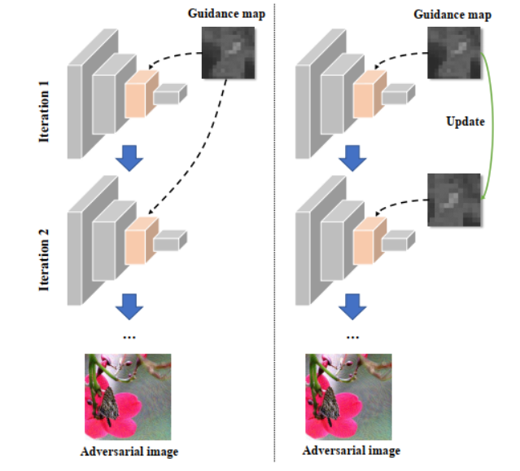

Improving Transferable Adversarial Attack via Feature-Momentum
简介：迁移性对抗样本攻击是指通过在已知模型上产生的对抗样本来攻击未知模型，实现攻击的泛化性。 现有方法通常采用迭代的方式对模型的特征层进行攻击，每次迭代攻击时都通过一个固定的引导图来决定特征中各个元素的重要程度。 由于迭代攻击会不断的改变图像内容，固定的引导图将无法准确的描述各个元素的重要程度。 因此本文提出了一种基于特征动量的动态引导迁移性对抗样本攻击方法。 该方法通过一种类似动量的形式来动态更新引导图，即在考虑上一次迭代所得引导图的同时计算当前引导图，使其更为准确的描述特征中各个元素的重要程度。 实验表明该方法显著地提升了迁移性对抗样本攻击的性能，证明了方法的有效性。
本文第一作者为2020级本科生何相龙，指导老师李岳尊。

作者: Xianglong He, Yuezun Li#, Haipeng Qu, Junyu Dong.
期刊名称: Computers & Security. CCF B. 影响因子5.105.
© AI Security Group (AISec) @ OUC